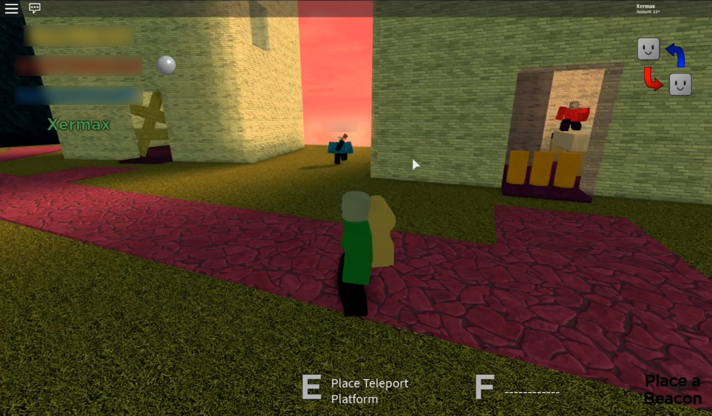
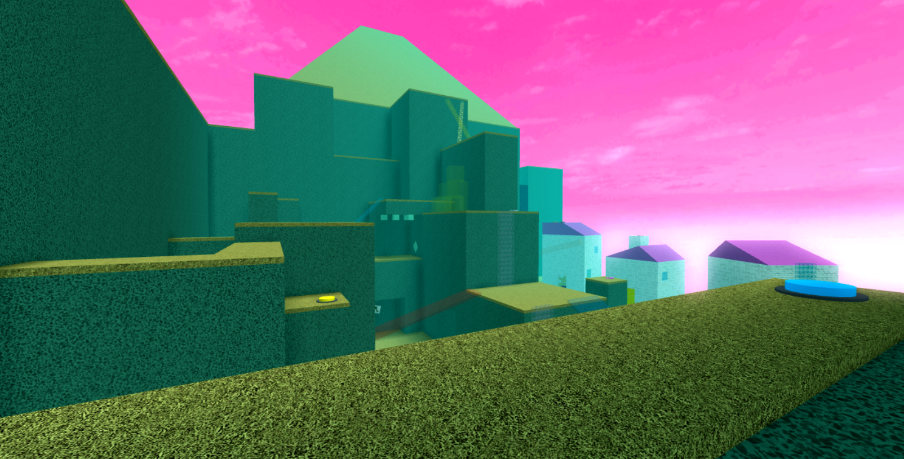
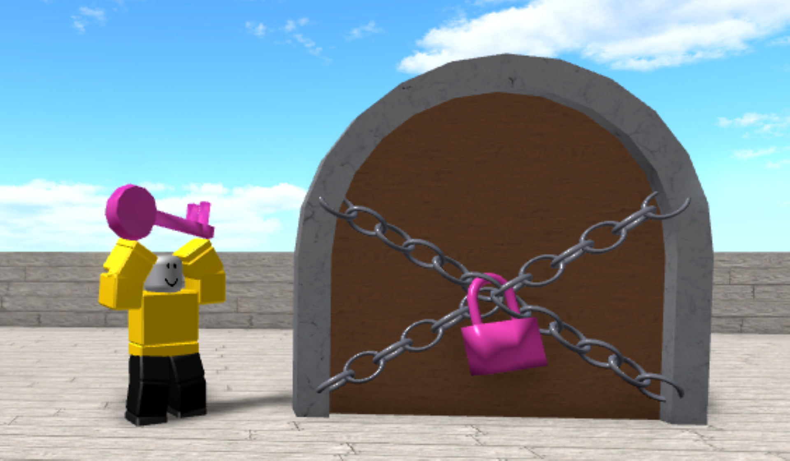
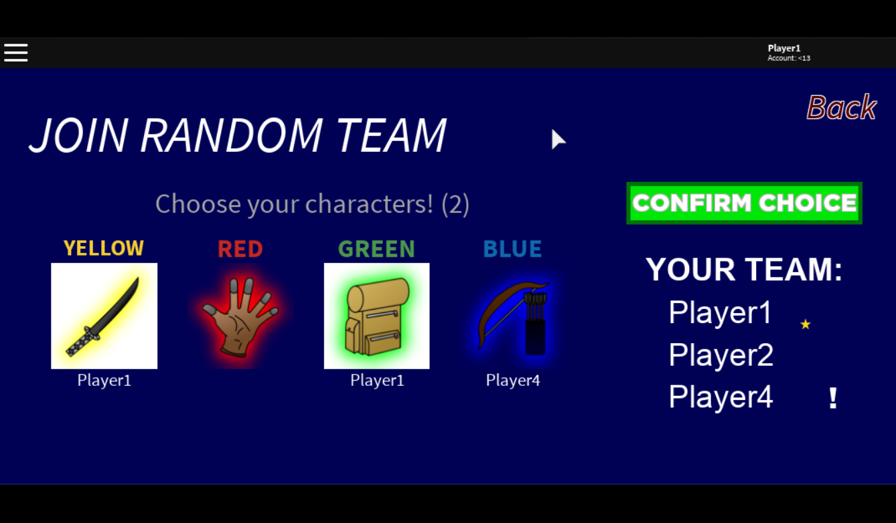
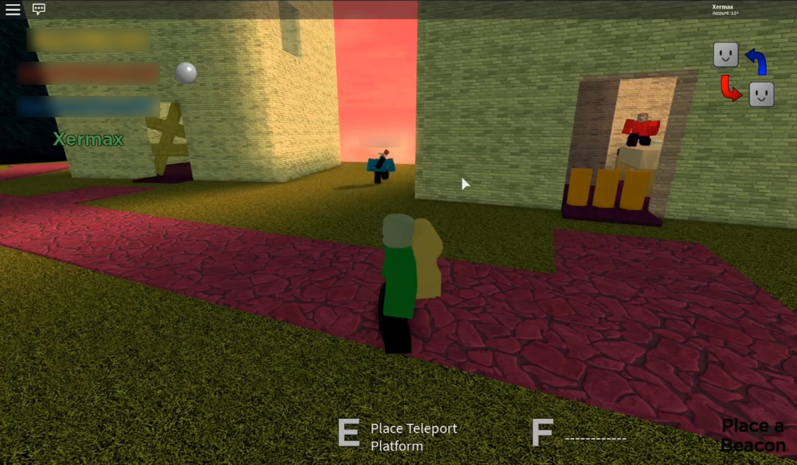
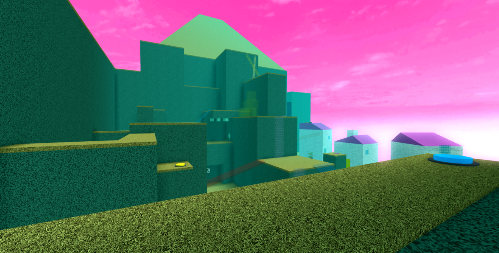
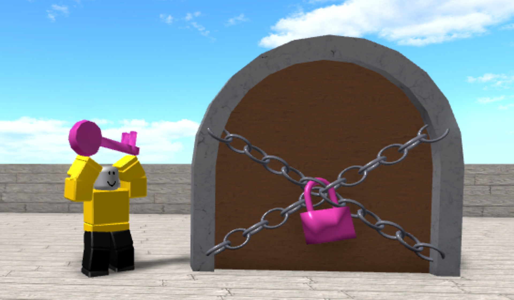
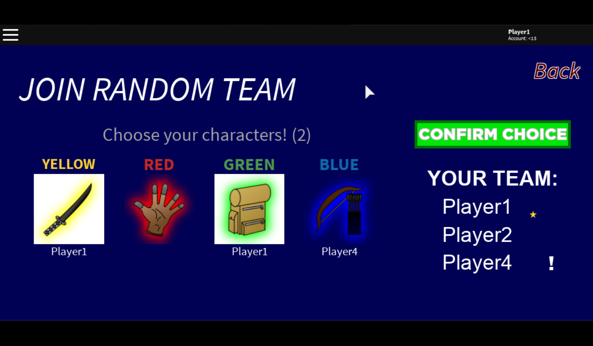

Quad Quests
 







A 4-player cooperative game where each player picks a character with an unique set of attributes and powers. With their respective traits, they try to reach various goals and collect loot.